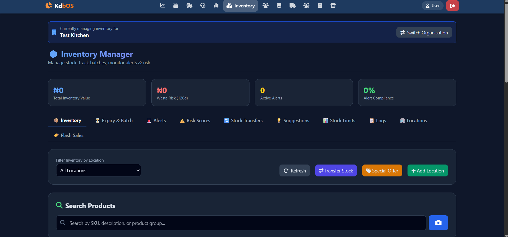

Building business systems that work.
We design and build intelligent business software that connects operations, improves visibility, and helps businesses make better decisions.

Running a growing business shouldn't mean managing disconnected systems.
As retail, pharmacy and food-service businesses grow, operations fragment. Sales live in one system, stock in a spreadsheet, purchasing in WhatsApp, reporting in a notebook. The result is not just inconvenience, it is measurable loss.
Disconnected sales and inventory
Sales are recorded in one place, stock in another. Reconciliation is manual, error-prone, and never quite matches the shelf.
Expiring stock and preventable losses
Batches reach expiry before anyone notices. Write-offs become a recurring cost that quietly erodes margin month after month.
Poor visibility across branches
Managers cannot see sales, stock or exceptions across locations without calling each branch. Decisions lag behind reality.
Manual procurement and operations
Purchase orders, receiving, and supplier management are handled manually. Reorder points are guessed rather than calculated.
Limited management reporting
Reports take days to prepare, are out of date on arrival, and rarely answer the questions owners actually need answered.
Fragmented fulfilment and ordering
Customer orders arrive through chats and calls. Delivery and returns are tracked informally, with little accountability or customer visibility.
One operating system. Connected business operations.
Kevs bOS is the flagship proprietary product of Kevs Digital. It brings the essential operations of a growing business into one connected system, so sales, stock, procurement, fulfilment and reporting share a single source of truth.
- Sales, POS and offline capability
- Inventory and batch-level expiry intelligence
- Procurement, accounts and human resources
- Storefront, dispatch and delivery tracking
- Business intelligence and an AI assistant

Expiry intelligence, built into operations.
Know what is at risk before it becomes a loss, and keep the record that shows you acted on it.
Know what is at risk before it becomes a loss.
Kevs bOS tracks expiry at the batch level, not just the product level. It surfaces what is at risk, recommends the order in which stock should be sold, and keeps a timestamped record of every alert, action and disposition.
- Batch-level expiry monitoring
- Days-to-expiry visibility across the catalogue
- At-risk inventory valuation in the local currency
- FEFO rotation recommendations for staff
- Timestamped action and disposition records
bOS provides alerts, recommendations and records that support operational and compliance evidence. It does not replace a business's own regulatory obligations or legal advice.
Read the Case StudyBuilt for the operators who keep commerce moving.
Kevs bOS is designed around the operational realities of mid-market Nigerian businesses, the ones with real volume, real staffing and real compliance obligations, but no enterprise IT department.
Supermarkets & grocery
High-SKU environments where expiry, stock accuracy and branch visibility decide the margin.
Pharmacies
Batch-level expiry intelligence, operational accountability and a timestamped evidence trail.
Restaurants & F&B
Order flow, inventory deduction, fulfilment coordination and daily operational visibility.
Multi-branch retail
Organisation-level visibility, branch-scoped access and connected reporting across locations.
A software company, not a reseller of one.
We build and operate the systems we sell. That means the people designing the product are the people responsible for how it performs in your business.
Proprietary development
Our software is designed, built and owned in-house. The product roadmap is driven by real operational feedback, not third-party licensing.
Integrated operations
Sales, stock, procurement, fulfilment and reporting share one data model. There is no reconciliation tax between systems that were never meant to talk.
Co-managed implementation
We deploy through a structured, co-managed model, because technology alone doesn't transform operations. People and process do.
Technical support
Platform-level support is delivered by the team that built the system. Local hardware and network support remain a clearly defined client responsibility.
Security-conscious architecture
Database-level tenant isolation, organisation- and branch-scoped access control, hardened headers and backups, designed into the platform, not added later.
Business-focused engineering
Every decision is measured against operational outcomes, fewer losses, clearer visibility, better decisions, not the elegance of the technology stack.
Let's build better business operations.
Talk to our team about how Kevs bOS could work in your business, or request a demonstration and see the platform for yourself.